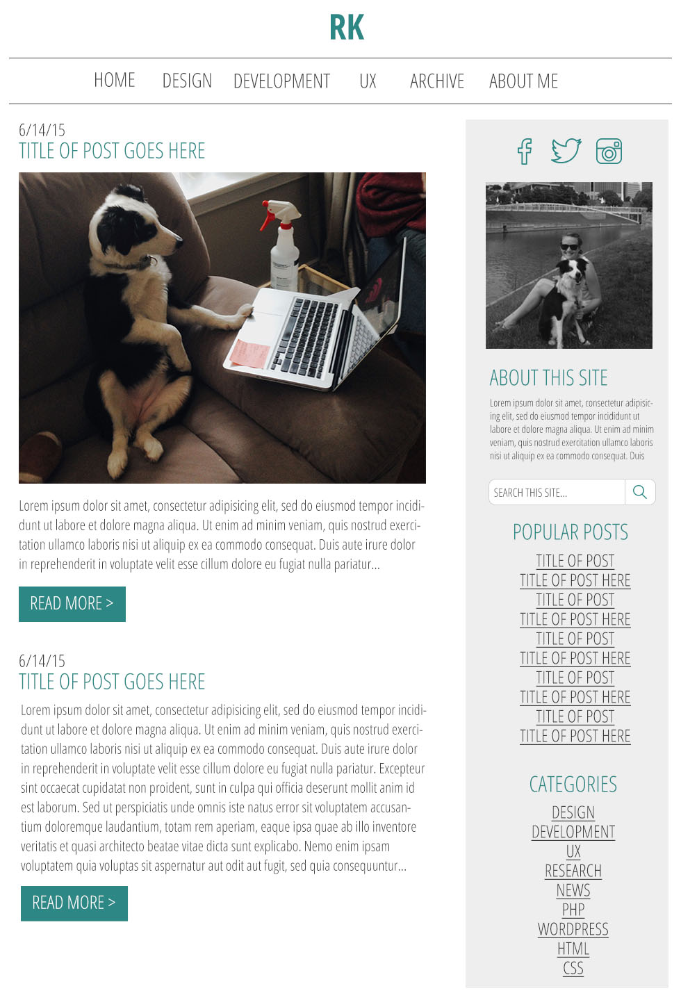

I kept a blog to document my process in learning web interactivity and engagement. I wanted to keep a more classic blog layout with the content on the left and a right sidebar. I also made sure to have multiple ways for users to find information they are looking for - main navigation with common categories, popular posts, and most recent posts. In keeping with my personal design style, I kept the colors and structure simple to focus on a more modern theme.
I used Skeleton as a framework to develop I utilized a responsive, custom Wordpress template design for this site. Utilizing widgets and custom page templates, I could create a better CMS experience. I also used HTML, CSS, and PHP to complete this project.
Visit Site